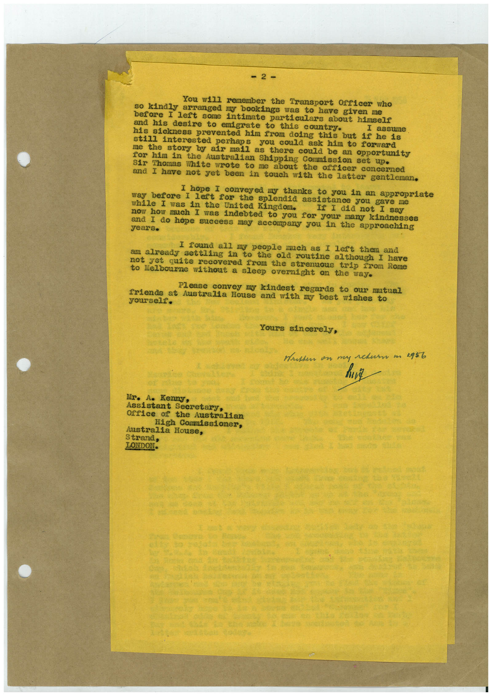

Book 1 · scan 094


Description
Transcription
Context
Review notes
Compare the machine draft with the scan. Handwriting and names need human review.
Artifacts
Edit the artifacts field in this note’s frontmatter to change these records. This summary is generated.
B01-S094-A01 — Letter — Book 1, scan 094
Types: Typed document, Letter
Scope: Whole scanned page; individual items can be split out during review.
Caption: Not mapped yet.
Caption source: Not recorded yet.
Caption status: unmapped
Machine transcription
= 2- You will remember the Transport Officer who so kindly arranged my bookings was to have given me before I left some intimate particulars about himself and his desire to emigrate to this country. his sickness prevented him from doing this but if he is still interested perhaps you could ask him to forward me the story by air mail as there could be an opportunity for him in the Australian Shipping Cornission set up• Sir Thomas White wrote to me about the officer concerned and I have not yet been in touch with the latter gentleman. I hope I conveyed my thanks to you in an appropriate before I left for the splendid assistance you gave me while I was in the United Kingdom. If I did not I say now how much I was indebted to you for your many kindnesses and I do hope success may accompany you in the approaching I found all my people much as I left them and am already settling in to the old routine although I have not yet quite recovered from the strenuous trip from Rome Melbourne without a sleep overnight on the way. Please convey my kindest regards to our mutual friends at Australia House and with my best wishes to yourself. Yours sincerely, Mritten on my return m 2956 Mr. Ae Kenny, Assistant Secretary, Office of the Australian High Cormissioner, Australia House, Strand, LONDON.